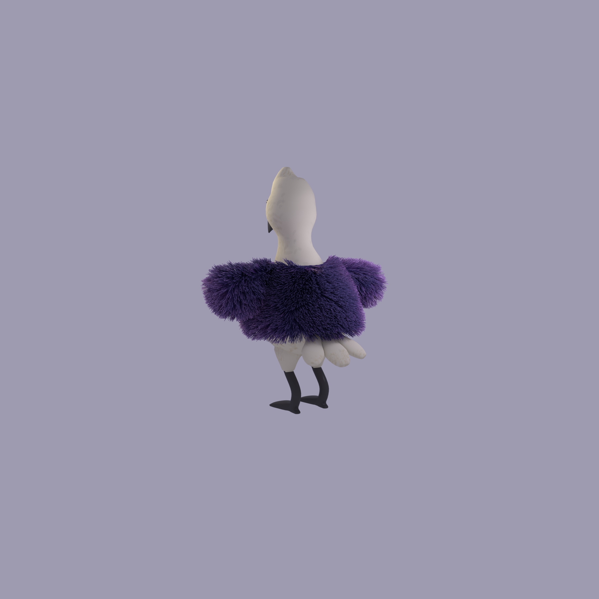
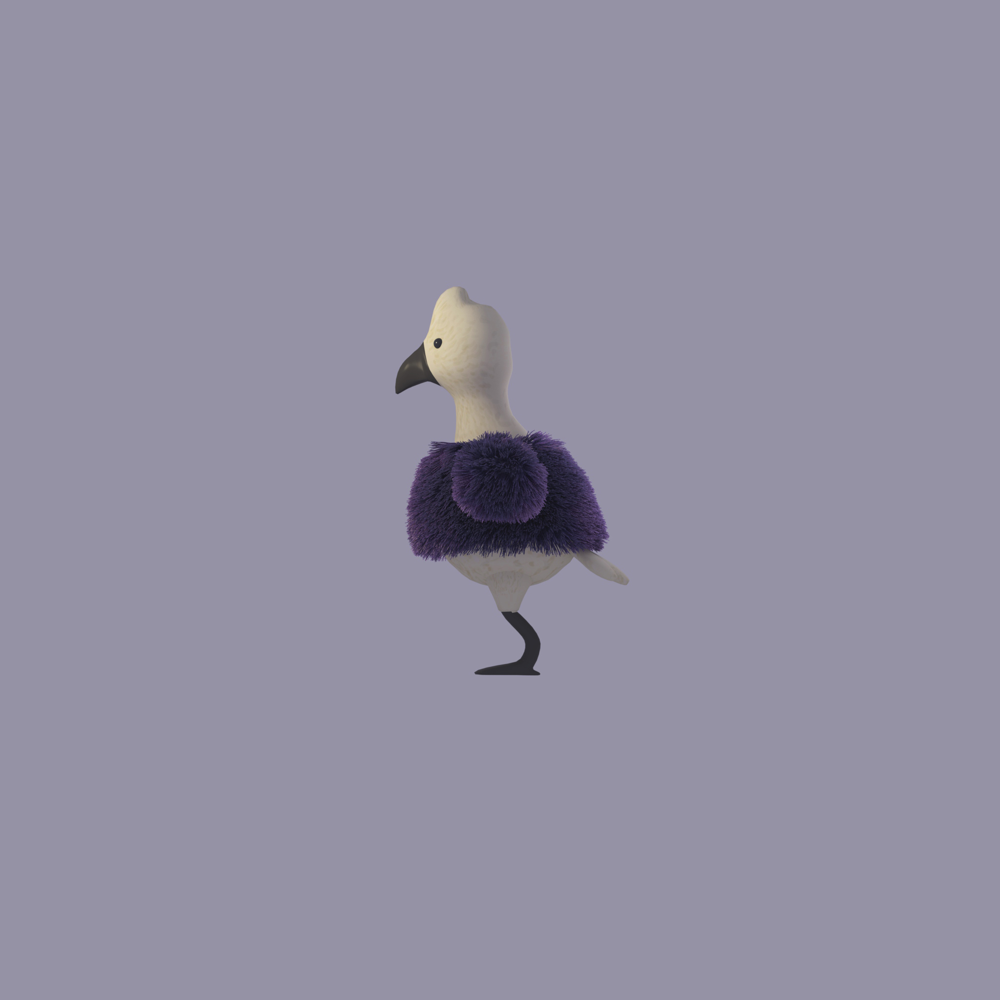
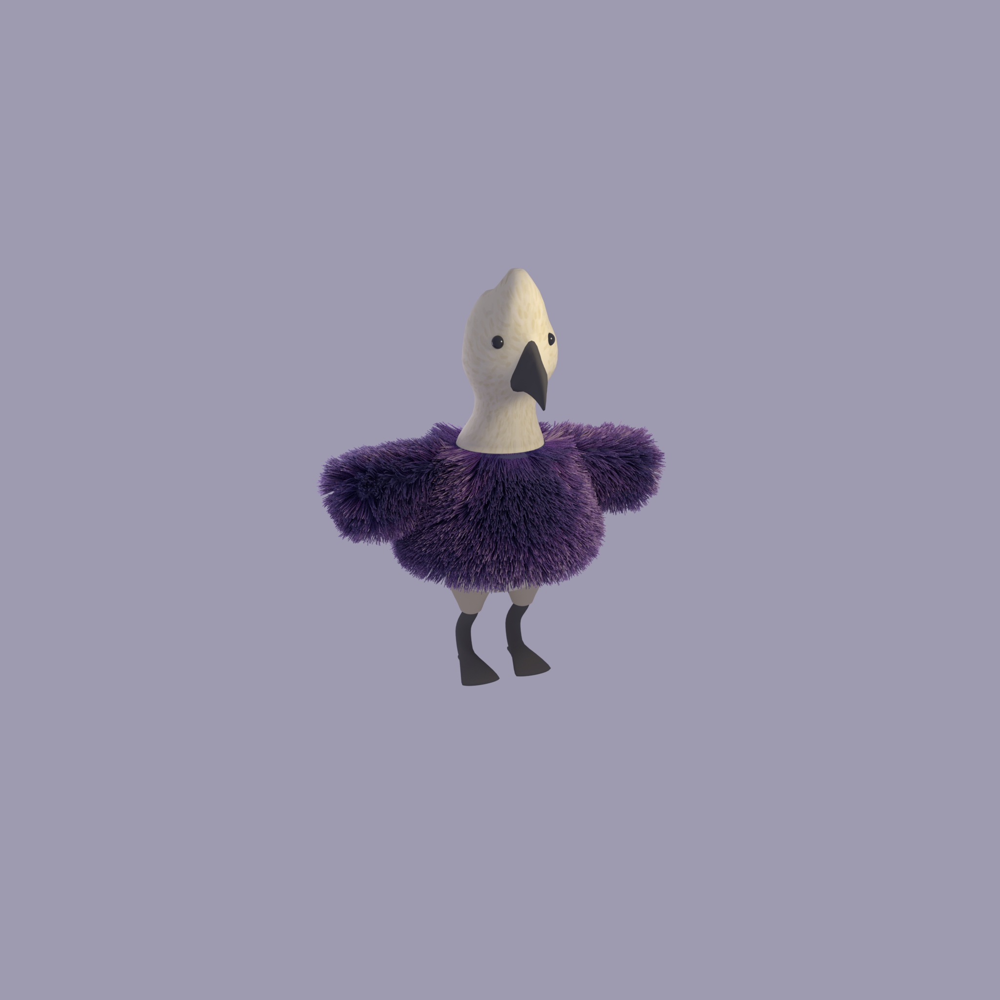
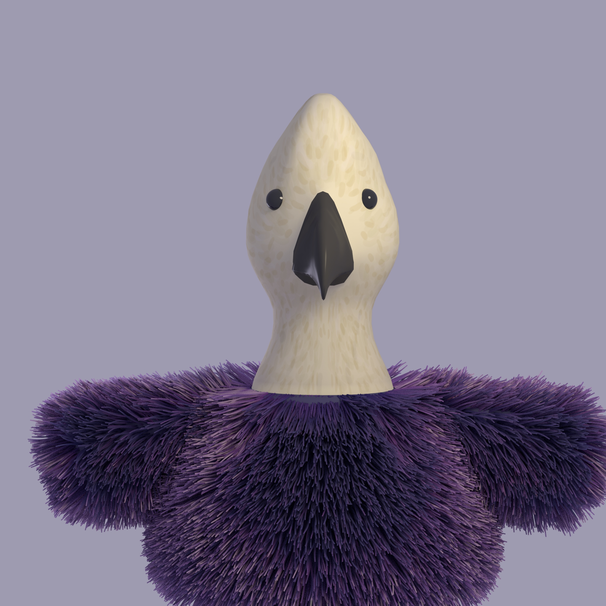

Passarinho de casaquinho
 
 
Proposta de curta-metragem enviada para alguns colegas: experiência coletiva e por etapas, o que conversa diretamente com o "conteúdo" que pensei para pautar cada fase do vídeo, a teoria e metodologia de pesquisa de Jean Piaget.
A grosso modo, Jean Piaget foi um intelectual suíço que tinha muita curiosidade em entender a forma que nós, humanos, adquirimos conhecimento. ele focou seus estudos no desenvolvimento cognitivo das crianças, classificando o nível de interação delas com o mundo de acordo com suas faixas etárias. Ele partia do pressuposto que qualquer pessoa pode aprender qualquer coisa, e que o conhecimento é baseado na capacidade de ação sobre os objetos, e não o contrário. Qual a reação das crianças no primeiro contato com fenômenos da natureza? Como elas entendem a utilidade de uma ferramenta que é colocada pela primeira vez em suas mãos?
Sendo assim, considerando o tempo que ganhamos ao não ter mais uma data limite de entrega, penso que seria legal trazermos a ideia de inteligência e criação por etapas para a narrativa e construção dela também.
Eu tinha imaginado que criaríamos um curta-metragem de aproximadamente 15 minutos, o qual contaria a história do passarinho numa viagem. No entanto, penso que poderia ser mais interessante trabalharmos antes em vídeos pequenos, focados em experiências menores, para aí, com já bastante material levantado, nos arriscarmos a escrever um roteiro completo.
Essas etapas, idealmente, seriam realizadas a partir de exercícios de improviso. É importante explorarmos respostas rápidas e materiais para as situações que tratamos, para que também tenhamos uma linguagem amigável para as crianças, com bom-humor, mas também não muito pedagógica ou didática. Acredito que o melhor caminho, seja focarmos nossos improvisos em reflexões sensoriais. dessa forma, evitamos aquelas histórias infantis que são todas pautadas em ensinamento de lições, moralidades, ou só uma "aventura".
Narração cantada
Agora, tocando num tópico mais técnico do processo, uma grande vontade minha seria que a animação fosse acompanhada de narradores que ora falasse, ora cantassem. A maior inspiração que surgiu foi a música de Bossa Nova do João Gilberto. Uns dias atrás eu estava ouvindo com o uiu um vídeo que contava da característica peculiar dele em cantar falando, sem a necessidade de acompanhar os tempos da batida musical.
Eu pessoalmente não entendo nada de música. mas acho que esse formato poderia resultar em improvisos divertidos e que contemplassem a história do passarinho. para isso, imaginei a criação de três personagens, que contariam a história para todos:
O trio de sambistas Emi, Uiu e Thales.